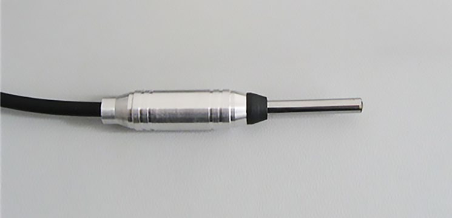
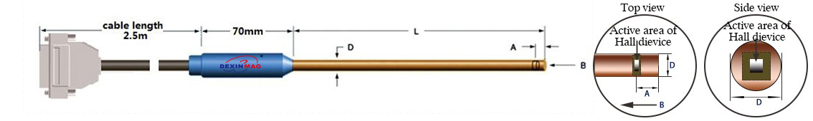

General Notes
- Probe length can be customized.
- Array probe configurations can be customized.
- A temperature sensor can be added inside the probe (explicitly noted for relevant types).
- Standard Cable Length: 2.5m
- Standard Probe Handle Length: 70mm


1. Ordinary High Precision Axial Probe
Recommended Gaussmeters: DX-130, DX-150, DX-160 etc.
| No. | L (cm) | D (mm) max | A (mm) | Dia. of active area (mm) | Frequency range | Full range | Accuracy (linearity) | Working temp. zone | Zero field temp. coefficient (max) | Temp. coefficient (max) | Packaging materials |
|---|---|---|---|---|---|---|---|---|---|---|---|
| 1ADX800F | 10/25/50 | 5.00 | 1±0.1 | 0.15 | DC-1kHz | 300kGs | ±0.2% ~ 30kGs | -10°C ~ +100°C | ±0.08 G/°C | ±0.015%/°C | Brass |
| 1ADX801F | 10/25/50 | 3.00 | 1±0.1 | 0.15 | DC-1kHz | 300kGs | ±0.2% ~ 30kGs | -10°C ~ +100°C | ±0.08 G/°C | ±0.015%/°C | Brass |
| 1ADX802F | 10/25/50 | 2.00 | 1±0.1 | 0.15 | DC-1kHz | 300kGs | ±0.2% ~ 30kGs | -10°C ~ +100°C | ±0.08 G/°C | ±0.015%/°C | Brass |
| 1ADX803F | 10/25/50 | 1.50 | 1±0.1 | 0.15 | DC-1kHz | 300kGs | ±0.2% ~ 30kGs | -10°C ~ +100°C | ±0.08 G/°C | ±0.015%/°C | Brass |
| 1ADX804F | 10/25/50 | 1.20 | 0.5±0.1 | 0.15 | DC-1kHz | 300kGs | ±0.2% ~ 30kGs | -10°C ~ +100°C | ±0.08 G/°C | ±0.015%/°C | Brass |
| 1ADX805F | 10/25/50 | 0.90 | 0.5±0.1 | 0.10 | DC-1kHz | 300kGs | ±0.2% ~ 30kGs | -10°C ~ +100°C | ±0.08 G/°C | ±0.015%/°C | Brass |
| 1ADX806F | 10/25/50 | 0.75 | 0.5±0.1 | 0.10 | DC-1kHz | 300kGs | ±0.2% ~ 30kGs | -10°C ~ +100°C | ±0.08 G/°C | ±0.015%/°C | Brass |
2. High Precision Temperature Compensation Axial Probe
(Note: Corresponds to probes with "-T" suffix, implicitly includes temperature sensor)
| No. | L (cm) | D (mm) max | A (mm) | Dia. of active area (mm) | Frequency range | Full range | Accuracy (linearity) | Working temp. zone | Zero field temp. coefficient (max) | Temp. coefficient (max) | Packaging materials |
|---|---|---|---|---|---|---|---|---|---|---|---|
| 1ADX800F-T | 10/25/50 | 5.00 | 1±0.1 | 0.15 | DC-1kHz | 300kGs | ±0.2% ~ 30kGs | -10°C ~ +100°C | ±0.08 G/°C | ±0.01%/°C | Brass |
| 1ADX801F-T | 10/25/50 | 3.00 | 1±0.1 | 0.15 | DC-1kHz | 300kGs | ±0.2% ~ 30kGs | -10°C ~ +100°C | ±0.08 G/°C | ±0.01%/°C | Brass |
| 1ADX802F-T | 10/25/50 | 2.00 | 1±0.1 | 0.15 | DC-1kHz | 300kGs | ±0.2% ~ 30kGs | -10°C ~ +100°C | ±0.08 G/°C | ±0.01%/°C | Brass |
| 1ADX803F-T | 10/25/50 | 1.50 | 1±0.1 | 0.15 | DC-1kHz | 300kGs | ±0.2% ~ 30kGs | -10°C ~ +100°C | ±0.08 G/°C | ±0.01%/°C | Brass |
| 1ADX804F-T | 10/25/50 | 1.20 | 0.5±0.1 | 0.15 | DC-1kHz | 300kGs | ±0.2% ~ 30kGs | -10°C ~ +100°C | ±0.08 G/°C | ±0.01%/°C | Brass |
| 1ADX805F-T | 10/25/50 | 0.90 | 0.5±0.1 | 0.10 | DC-1kHz | 300kGs | ±0.2% ~ 30kGs | -10°C ~ +100°C | ±0.08 G/°C | ±0.01%/°C | Brass |
| 1ADX806F-T | 10/25/50 | 0.75 | 0.5±0.1 | 0.10 | DC-1kHz | 300kGs | ±0.2% ~ 30kGs | -10°C ~ +100°C | ±0.08 G/°C | ±0.01%/°C | Brass |
3. Ultra High Precision Axial Probe
Recommended Gaussmeters: DX-180, DX-210, DX-360
| No. | L (cm) | D (mm) max | A (mm) | Dia. of active area (mm) | Frequency range | Full range | Accuracy (linearity) | Working temp. zone | Zero field temp. coefficient (max) | Temp. coefficient (max) | Packaging materials |
|---|---|---|---|---|---|---|---|---|---|---|---|
| 1HADX800F | 10/25/50 | 5.00 | 1±0.1 | 0.15 | DC-1kHz | 300kGs | ±0.05% ~ 30kGs | -10°C ~ +100°C | ±0.08 G/°C | ±0.007%/°C | Brass |
| 1HADX801F | 10/25/50 | 3.00 | 1±0.1 | 0.15 | DC-1kHz | 300kGs | ±0.05% ~ 30kGs | -10°C ~ +100°C | ±0.08 G/°C | ±0.007%/°C | Brass |
| 1HADX802F | 10/25/50 | 2.00 | 1±0.1 | 0.15 | DC-1kHz | 300kGs | ±0.05% ~ 30kGs | -10°C ~ +100°C | ±0.08 G/°C | ±0.007%/°C | Brass |
| 1HADX803F | 10/25/50 | 1.50 | 1±0.1 | 0.15 | DC-1kHz | 300kGs | ±0.05% ~ 30kGs | -10°C ~ +100°C | ±0.08 G/°C | ±0.007%/°C | Brass |
| 1HADX804F | 10/25/50 | 1.20 | 0.5±0.1 | 0.15 | DC-1kHz | 300kGs | ±0.05% ~ 30kGs | -10°C ~ +100°C | ±0.08 G/°C | ±0.007%/°C | Brass |
| 1HADX805F | 10/25/50 | 0.90 | 0.5±0.1 | 0.10 | DC-1kHz | 300kGs | ±0.2% ~ 30kGs | -10°C ~ +100°C | ±0.08 G/°C | ±0.007%/°C | Brass |
| 1HADX806F | 10/25/50 | 0.75 | 0.5±0.1 | 0.10 | DC-1kHz | 300kGs | ±0.2% ~ 30kGs | -10°C ~ +100°C | ±0.08 G/°C | ±0.007%/°C | Brass |
4. Ultra-High Precision Temperature Compensation Axial Probe
Recommended Gaussmeters: DX-180, DX-210, DX-360
(Note: Combines Ultra High Precision with Temperature Compensation, suffix "-FT")
| No. | L (cm) | D (mm) max | A (mm) | Dia. of active area (mm) | Frequency range | Full range | Accuracy (linearity) | Working temp. zone | Zero field temp. coefficient (max) | Temp. coefficient (max) | Packaging materials |
|---|---|---|---|---|---|---|---|---|---|---|---|
| 1HADX800FT | 10/25/50 | 5.00 | 1±0.1 | 0.15 | DC-1kHz | 300kGs | ±0.05% ~ 30kGs | -10°C ~ +100°C | ±0.08 G/°C | ±0.007%/°C | Brass |
| 1HADX801FT | 10/25/50 | 3.00 | 1±0.1 | 0.15 | DC-1kHz | 300kGs | ±0.05% ~ 30kGs | -10°C ~ +100°C | ±0.08 G/°C | ±0.007%/°C | Brass |
| 1HADX802FT | 10/25/50 | 2.00 | 1±0.1 | 0.15 | DC-1kHz | 300kGs | ±0.05% ~ 30kGs | -10°C ~ +100°C | ±0.08 G/°C | ±0.007%/°C | Brass |
| 1HADX803FT | 10/25/50 | 1.50 | 1±0.1 | 0.15 | DC-1kHz | 300kGs | ±0.05% ~ 30kGs | -10°C ~ +100°C | ±0.08 G/°C | ±0.007%/°C | Brass |
| 1HADX804FT | 10/25/50 | 1.20 | 0.5±0.1 | 0.15 | DC-1kHz | 300kGs | ±0.05% ~ 30kGs | -10°C ~ +100°C | ±0.08 G/°C | ±0.007%/°C | Brass |
| 1HADX805FT | 10/25/50 | 0.90 | 0.5±0.1 | 0.10 | DC-1kHz | 300kGs | ±0.2% ~ 30kGs | -10°C ~ +100°C | ±0.08 G/°C | ±0.007%/°C | Brass |
| 1HADX806FT | 10/25/50 | 0.75 | 0.5±0.1 | 0.10 | DC-1kHz | 300kGs | ±0.2% ~ 30kGs | -10°C ~ +100°C | ±0.08 G/°C | ±0.007%/°C | Brass |
5. Temperature Compensated High Precision Axial Probe (with temperature sensor)
(Note: Explicitly stating the presence of the temperature sensor)
| No. | L (cm) | D (mm) max | A (mm) | Dia. of active area (mm) | Frequency range | Full range | Accuracy (linearity) | Working temp. zone | Zero field temp. coefficient (max) | Temp. coefficient (max) | Packaging materials |
|---|---|---|---|---|---|---|---|---|---|---|---|
| 1ADX800F-T | 10/25/50 | 5.00 | 1±0.1 | 0.15 | DC-1kHz | 300kGs | ±0.2% ~ 30kGs | -10°C ~ +100°C | ±0.08 G/°C | ±0.01%/°C | Brass |
| 1ADX801F-T | 10/25/50 | 3.00 | 1±0.1 | 0.15 | DC-1kHz | 300kGs | ±0.2% ~ 30kGs | -10°C ~ +100°C | ±0.08 G/°C | ±0.01%/°C | Brass |
| 1ADX802F-T | 10/25/50 | 2.00 | 1±0.1 | 0.15 | DC-1kHz | 300kGs | ±0.2% ~ 30kGs | -10°C ~ +100°C | ±0.08 G/°C | ±0.01%/°C | Brass |
| 1ADX803F-T | 10/25/50 | 1.50 | 1±0.1 | 0.15 | DC-1kHz | 300kGs | ±0.2% ~ 30kGs | -10°C ~ +100°C | ±0.08 G/°C | ±0.01%/°C | Brass |
| 1ADX804F-T | 10/25/50 | 1.20 | 0.5±0.1 | 0.15 | DC-1kHz | 300kGs | ±0.2% ~ 30kGs | -10°C ~ +100°C | ±0.08 G/°C | ±0.01%/°C | Brass |
| 1ADX805F-T | 10/25/50 | 0.90 | 0.5±0.1 | 0.10 | DC-1kHz | 300kGs | ±0.2% ~ 30kGs | -10°C ~ +100°C | ±0.08 G/°C | ±0.01%/°C | Brass |
| 1ADX806F-T | 10/25/50 | 0.75 | 0.5±0.1 | 0.10 | DC-1kHz | 300kGs | ±0.2% ~ 30kGs | -10°C ~ +100°C | ±0.08 G/°C | ±0.01%/°C | Brass |
6. Temperature Compensation High Temperature High Precision Axial Probe (with temperature sensor)
(Note: Suffix "-HT", extended high temperature range)
| No. | L (cm) | D (mm) max | A (mm) | Dia. of active area (mm) | Frequency range | Full range | Accuracy (linearity) | Working temp. zone | Zero field temp. coefficient (max) | Temp. coefficient (max) | Packaging materials |
|---|---|---|---|---|---|---|---|---|---|---|---|
| 1ADX800F-HT | 10/25/50 | 5.00 | 1±0.1 | 0.15 | DC-1kHz | 300kGs | ±0.2% ~ 30kGs | -10°C ~ +200°C | ±0.08 G/°C | ±0.01%/°C | Brass |
| 1ADX801F-HT | 10/25/50 | 3.00 | 1±0.1 | 0.15 | DC-1kHz | 300kGs | ±0.2% ~ 30kGs | -10°C ~ +200°C | ±0.08 G/°C | ±0.01%/°C | Brass |
| 1ADX802F-HT | 10/25/50 | 2.00 | 1±0.1 | 0.15 | DC-1kHz | 300kGs | ±0.2% ~ 30kGs | -10°C ~ +200°C | ±0.08 G/°C | ±0.01%/°C | Brass |
| 1ADX803F-HT | 10/25/50 | 1.50 | 1±0.1 | 0.15 | DC-1kHz | 300kGs | ±0.2% ~ 30kGs | -10°C ~ +200°C | ±0.08 G/°C | ±0.01%/°C | Brass |
| 1ADX804F-HT | 10/25/50 | 1.20 | 0.5±0.1 | 0.15 | DC-1kHz | 300kGs | ±0.2% ~ 30kGs | -10°C ~ +200°C | ±0.08 G/°C | ±0.01%/°C | Brass |
| 1ADX805F-HT | 10/25/50 | 0.90 | 0.5±0.1 | 0.10 | DC-1kHz | 300kGs | ±0.2% ~ 30kGs | -10°C ~ +200°C | ±0.08 G/°C | ±0.01%/°C | Brass |
| 1ADX806F-HT | 10/25/50 | 0.75 | 0.5±0.1 | 0.10 | DC-1kHz | 300kGs | ±0.2% ~ 30kGs | -10°C ~ +200°C | ±0.08 G/°C | ±0.01%/°C | Brass |
7. Temperature Compensated High and Low Temperature Resistant High Precision Axial Probe (with temperature sensor)
(Note: Suffix "-LHT" or "-HT" as listed, very wide temperature range)
| No. | L (cm) | D (mm) max | A (mm) | Dia. of active area (mm) | Frequency range | Full range | Accuracy (linearity) | Working temp. zone | Zero field temp. coefficient (max) | Temp. coefficient (max) | Packaging materials |
|---|---|---|---|---|---|---|---|---|---|---|---|
| 1ADX800F-LHT | 10/25/50 | 5.00 | 1±0.1 | 0.15 | DC-1kHz | 300kGs | ±0.2% ~ 30kGs | -196°C ~ +200°C | ±0.08 G/°C | ±0.01%/°C | Brass |
| 1ADX801F-LHT | 10/25/50 | 3.00 | 1±0.1 | 0.15 | DC-1kHz | 300kGs | ±0.2% ~ 30kGs | -196°C ~ +200°C | ±0.08 G/°C | ±0.01%/°C | Brass |
| 1ADX802F-LHT | 10/25/50 | 2.00 | 1±0.1 | 0.15 | DC-1kHz | 300kGs | ±0.2% ~ 30kGs | -196°C ~ +200°C | ±0.08 G/°C | ±0.01%/°C | Brass |
| 1ADX803F-LHT | 10/25/50 | 1.50 | 1±0.1 | 0.15 | DC-1kHz | 300kGs | ±0.2% ~ 30kGs | -196°C ~ +200°C | ±0.08 G/°C | ±0.01%/°C | Brass |
| 1ADX804F-HT | 10/25/50 | 1.20 | 0.5±0.1 | 0.15 | DC-1kHz | 300kGs | ±0.2% ~ 30kGs | -196°C ~ +200°C | ±0.08 G/°C | ±0.01%/°C | Brass |
| 1ADX805F-HT | 10/25/50 | 0.90 | 0.5±0.1 | 0.10 | DC-1kHz | 300kGs | ±0.2% ~ 30kGs | -196°C ~ +200°C | ±0.08 G/°C | ±0.01%/°C | Brass |
| 1ADX806F-HT | 10/25/50 | 0.75 | 0.5±0.1 | 0.10 | DC-1kHz | 300kGs | ±0.2% ~ 30kGs | -196°C ~ +200°C | ±0.08 G/°C | ±0.01%/°C | Brass |
8. Temperature Compensated Low Temperature Resistant High Precision Axial Probe (with temperature sensor)
(Note: Suffix "-LT", very low temperature range)
| No. | L (cm) | D (mm) max | A (mm) | Dia. of active area (mm) | Frequency range | Full range | Accuracy (linearity) | Working temp. zone | Zero field temp. coefficient (max) | Temp. coefficient (max) | Packaging materials |
|---|---|---|---|---|---|---|---|---|---|---|---|
| 1ADX800F-LT | 10/25/50 | 5.00 | 1±0.1 | 0.15 | DC-1kHz | 300kGs | ±0.2% ~ 30kGs | -269°C ~ +75°C | ±0.08 G/°C | ±0.01%/°C | Brass |
| 1ADX801F-LT | 10/25/50 | 3.00 | 1±0.1 | 0.15 | DC-1kHz | 300kGs | ±0.2% ~ 30kGs | -269°C ~ +75°C | ±0.08 G/°C | ±0.01%/°C | Brass |
| 1ADX802F-LT | 10/25/50 | 2.00 | 1±0.1 | 0.15 | DC-1kHz | 300kGs | ±0.2% ~ 30kGs | -269°C ~ +75°C | ±0.08 G/°C | ±0.01%/°C | Brass |
| 1ADX803F-LT | 10/25/50 | 1.50 | 1±0.1 | 0.15 | DC-1kHz | 300kGs | ±0.2% ~ 30kGs | -269°C ~ +75°C | ±0.08 G/°C | ±0.01%/°C | Brass |
| 1ADX804F-LT | 10/25/50 | 1.20 | 0.5±0.1 | 0.15 | DC-1kHz | 300kGs | ±0.2% ~ 30kGs | -269°C ~ +75°C | ±0.08 G/°C | ±0.01%/°C | Brass |
| 1ADX805F-LT | 10/25/50 | 0.90 | 0.5±0.1 | 0.10 | DC-1kHz | 300kGs | ±0.2% ~ 30kGs | -269°C ~ +75°C | ±0.08 G/°C | ±0.01%/°C | Brass |
| 1ADX806F-LT | 10/25/50 | 0.75 | 0.5±0.1 | 0.10 | DC-1kHz | 300kGs | ±0.2% ~ 30kGs | -269°C ~ +75°C | ±0.08 G/°C | ±0.01%/°C | Brass |
9. Temperature Compensated Low Temperature Resistant Ultra High Precision Axial Probe (with temperature sensor)
(Note: Suffix "-LT", combines Ultra High Precision with very low temperature range)
| No. | L (cm) | D (mm) max | A (mm) | Dia. of active area (mm) | Frequency range | Full range | Accuracy (linearity) | Working temp. zone | Zero field temp. coefficient (max) | Temp. coefficient (max) | Packaging materials |
|---|---|---|---|---|---|---|---|---|---|---|---|
| 1HADX800F-LT | 10/25/50 | 5.00 | 1±0.1 | 0.15 | DC-1kHz | 300kGs | ±0.05% ~ 30kGs | -269°C ~ +75°C | ±0.08 G/°C | ±0.01%/°C | Brass |
| 1HADX801F-LT | 10/25/50 | 3.00 | 1±0.1 | 0.15 | DC-1kHz | 300kGs | ±0.05% ~ 30kGs | -269°C ~ +75°C | ±0.08 G/°C | ±0.01%/°C | Brass |
| 1HADX802F-LT | 10/25/50 | 2.00 | 1±0.1 | 0.15 | DC-1kHz | 300kGs | ±0.05% ~ 30kGs | -269°C ~ +75°C | ±0.08 G/°C | ±0.01%/°C | Brass |
| 1HADX803F-LT | 10/25/50 | 1.50 | 1±0.1 | 0.15 | DC-1kHz | 300kGs | ±0.05% ~ 30kGs | -269°C ~ +75°C | ±0.08 G/°C | ±0.01%/°C | Brass |
| 1HADX804F-LT | 10/25/50 | 1.20 | 0.5±0.1 | 0.15 | DC-1kHz | 300kGs | ±0.05% ~ 30kGs | -269°C ~ +75°C | ±0.08 G/°C | ±0.01%/°C | Brass |
| 1HADX805F-LT | 10/25/50 | 0.90 | 0.5±0.1 | 0.10 | DC-1kHz | 300kGs | ±0.05% ~ 30kGs | -269°C ~ +75°C | ±0.08 G/°C | ±0.01%/°C | Brass |
| 1HADX806F-LT | 10/25/50 | 0.75 | 0.5±0.1 | 0.10 | DC-1kHz | 300kGs | ±0.05% ~ 30kGs | -269°C ~ +75°C | ±0.08 G/°C | ±0.01%/°C | Brass |
10. High-Frequency High-Precision Axial Probe
(Note: Suffix "-H", higher frequency range, different materials)
| No. | L (cm) | D (mm) max | A (mm) | Dia. of active area (mm) | Frequency range | Full range | Accuracy (linearity) | Working temp. zone | Zero field temp. coefficient (max) | Temp. coefficient (max) | Packaging materials |
|---|---|---|---|---|---|---|---|---|---|---|---|
| 1ADX801F-H | 10/25/50 | 4.00 | 1±0.1 | 0.15 | DC-50kHz | 300kGs | ±0.2% ~ 30kGs | -10°C ~ +75°C | ±0.08 G/°C | ±0.01%/°C | Plastic fiber |
| 1ADX802F-H | 10/25/50 | 3.00 | 1±0.1 | 0.15 | DC-50kHz | 300kGs | ±0.2% ~ 30kGs | -10°C ~ +75°C | ±0.08 G/°C | ±0.01%/°C | Plastic fiber |
| 1ADX803F-H | 10/25/50 | 13.00 | 1±0.1 | 0.15 | DC-1kHz | 30kGs | ±0.05% ~ 30kGs | -10°C ~ +75°C | ±0.08 G/°C | ±0.01%/°C | Carbon fiber |
| 1ADX804F-H | 10/25/50 | 10.00 | 1±0.1 | 0.15 | DC-1kHz | 30kGs | ±0.05% ~ 30kGs | -10°C ~ +75°C | ±0.08 G/°C | ±0.01%/°C | Carbon fiber |
| 1ADX805F-H | 10/25/50 | 8.00 | 1±0.1 | 0.15 | DC-1kHz | 30kGs | ±0.05% ~ 30kGs | -10°C ~ +75°C | ±0.08 G/°C | ±0.01%/°C | Carbon fiber |
| 1ADX806F-H | 10/25/50 | 6.00 | 1±0.1 | 0.15 | DC-1kHz | 30kGs | ±0.05% ~ 30kGs | -10°C ~ +75°C | ±0.08 G/°C | ±0.01%/°C | Carbon fiber |
| 1ADX807F-H | 10/25/50 | 5.00 | 1±0.1 | 0.15 | DC-1kHz | 30kGs | ±0.05% ~ 30kGs | -10°C ~ +75°C | ±0.08 G/°C | ±0.01%/°C | Carbon fiber |
| 1ADX808F-H | 10/25/50 | 4.00 | 1±0.1 | 0.15 | DC-1kHz | 30kGs | ±0.05% ~ 30kGs | -10°C ~ +75°C | ±0.08 G/°C | ±0.01%/°C | Carbon fiber |
| 1ADX809F-H | 10/25/50 | 3.00 | 1±0.1 | 0.15 | DC-1kHz | 30kGs | ±0.05% ~ 30kGs | -10°C ~ +75°C | ±0.08 G/°C | ±0.01%/°C | Carbon fiber |